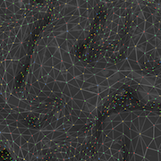
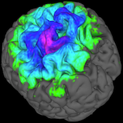
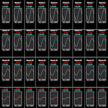

NeoBrain
B.Sc. thesis, A research project focused on optimizing neuronal activity maps treatment using massively parallel technologies.
C++, CUDA, Boost
In the scope of the NeoBrain project, several algorithms have been designed to solve large-scale problems involving 60,000x10,000 matrices over thousands of iterations in the field of neuronal activity visualization. NeoBrain aims to utilize MRI and MEG scans in a joint manner to generate 3D brain models with real-time neuronal activity animation on the cerebral cortex. The algorithm for retrieving the neuronal map from MEG sensors takes three weeks to execute on a standard PC. The objective of this project was to achieve the maximum speedup possible by leveraging CUDA technology with a limited number of GPUs.
The Project
Large matrices with non-obvious metrics and parallelization
An important mathematical background has been incorporated into simplified (confidential) algorithms used in NeoBrain. Having a basic understanding of these mathematics is necessary to comprehend how the algorithm can be optimized and which part of the matrices it relies on. Additionally, finding an efficient method to parallelize all the computations was challenging due to the need to utilize advanced CUDA features.
Using estimation methods to build up neural activity maps
As the base equation system (with 108 variables) is inherently unsolvable, the only way to obtain usable neuronal activity maps from the MEG sensors is through an iterative process with an error estimator. This algorithm has been implemented in multiple ways, leveraging different CUDA capabilities, to find the most efficient solution. Starting from the sequential version, approximately 30 implementations have been developed, resulting in a final speedup of over 100,000.
Tuning parameters
To ensure that the fastest algorithm implementation actually produces the correct result, certain parameters had to be tuned. Extensive tests were conducted using common machine learning methods to discover the minimum cost estimators, resulting in optimized settings that generate the most accurate neuronal activity map. Several cost estimators and minimization methods were employed, such as random search and stochastic gradient descent.
Miscellaneous
| Type | B.Sc. thesis |
| Degree | B.Sc. HE-Arc, 3rd year |
| Course | - |
| Duration | ~400 hours |
| Supervisor | Prof. Cédric Bilat |
| Co-developer | Jason Racine |